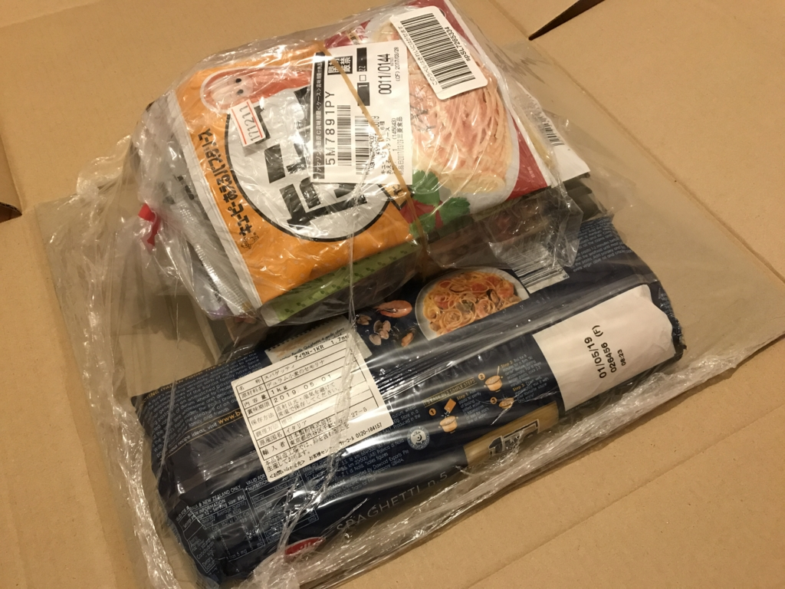
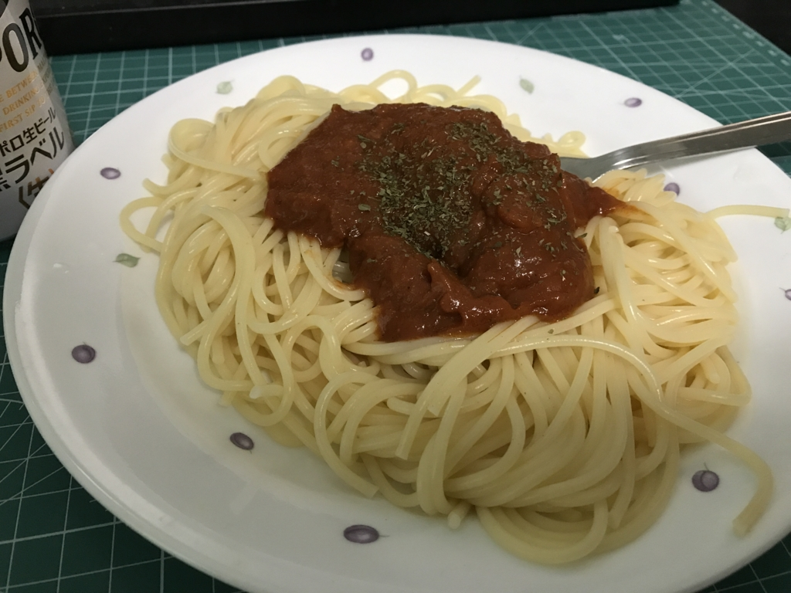

Amazon ウィッシュリスト：救援物資をいただきました
公開日：

なんか大量に食料が送られてきました。パスタと、パスタソースと……その他もろもろ！
![バリラ スパゲッティ1.7mm(No.5) [正規輸入品] 1kg](https://images-fe.ssl-images-amazon.com/images/I/41%2Bws6zmWwL._SL160_.jpg "バリラ スパゲッティ1.7mm(No.5) [正規輸入品] 1kg")
バリラ スパゲッティ1.7mm(No.5) [正規輸入品] 1kg
- 出版社/メーカー: 日本製粉
- メディア: 食品&飲料
- 購入: 6人 クリック: 32回
- この商品を含むブログ (3件) を見る
![キユーピー あえるパスタソース6種 [カルボナーラ1袋(2食入)、たらこ1袋(2食入)、ミートソース フォン・ド・ヴォー1袋(2食入)、バジル1袋(2食入)、ツナマヨ1袋(2食入)、きのこの醤油バター1袋(2食入り)]](https://images-fe.ssl-images-amazon.com/images/I/61fkY7esaZL._SL160_.jpg "キユーピー あえるパスタソース6種 [カルボナーラ1袋(2食入)、たらこ1袋(2食入)、ミートソース フォン・ド・ヴォー1袋(2食入)、バジル1袋(2食入)、ツナマヨ1袋(2食入)、きのこの醤油バター1袋(2食入り)]")

- 出版社/メーカー: 五木食品
- メディア: 食品&飲料
- 購入: 2人 クリック: 15回
- この商品を含むブログ (8件) を見る
ちょっとはやめの誕生日プレゼントのことですが、3月は降ってわいた実家への支出やら、5月に行く de:code 代やら飛行機代やらでぶっちゃけ金欠だったので（もう4月ですけど！）、めっちゃうれしいです。

さっそくミートソースを食べてみたけど、フツーに美味しかったです（パセリの色変わってら……早く使い切らないと）。こういうパスタソースがあれば、パスタを電子レンジでチンしてサクッと食べられるので、忙しいときや、プログラミングに夢中になっているときはだいぶありがたい。
辛辛魚で凌いでいたので、お尻の穴がいくつあっても足りないので助かる……。